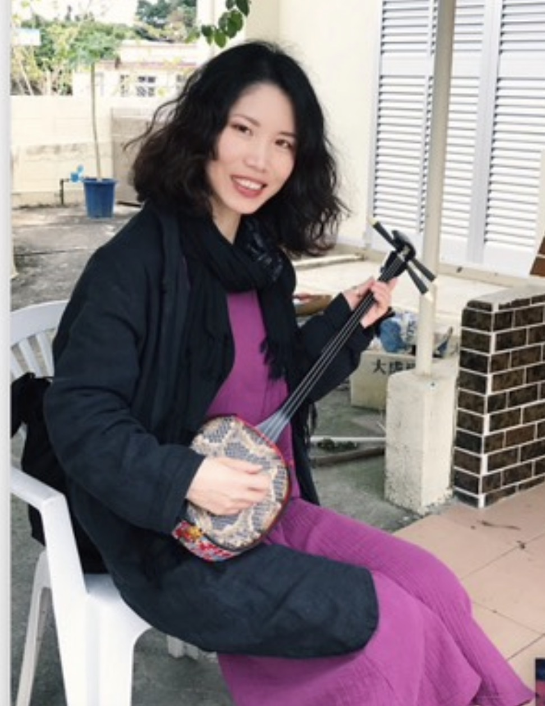
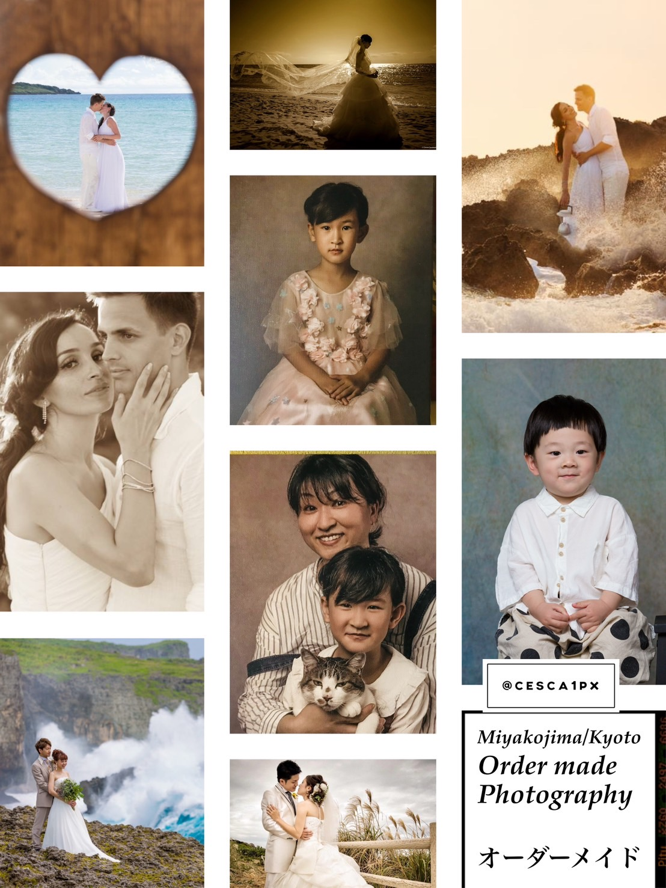

March 2026

Why We Featured This Storyこのストーリーを紹介する理由
Selected for the quiet emotional presence in Cesca's work and the way her years in Miyakojima continue to live inside her visual practice.
Cescaさんの作品にある静かな存在感と、宮古島で過ごした時間が今も表現の中に息づいているところを大切に紹介しています。
場所を離れるアーティストもいれば、 その土地を心の中に持ち続けるアーティストもいます。
My Miyakojima の最初の Creative Spotlight として 誰をご紹介するべきか考えたとき、 私の中で自然に浮かんだのが Cesca でした。
宮古島で長年暮らした時間の中で、 やわらかな光や、急がない静けさ、 そして繰り返し寄せる波のリズムが、 彼女の感性に静かに染み込んでいったのだと思います。
現在は関西を拠点に活動されていますが、 その島の空気は今も作品の中に息づいています。
彼女の作品は決して大きな声で主張するものではありません。 けれど、静かに心に残ります。
そこには宮古島に通じる “やわらかな強さ” と “呼吸する余白” が感じられ、 見る人の内側にそっと寄り添うような ヒーリング性が宿っています。
Some artists leave a place behind. Others carry it quietly within them.
When My Miyakojima began shaping its first Creative Spotlight, Cesca felt like a natural beginning.
She lived in Miyakojima for many years — long enough for the island’s light to settle into her way of seeing. The kind of light that softens edges. The kind of silence that is not empty, but full. The rhythm of waves that return again and again without urgency.
Even now, based in Kansai, that island sensibility remains present in her work.
Her art does not shout. It lingers.
And in that lingering, you feel something familiar to Miyakojima — softness without fragility, calm without stillness, and a subtle healing presence that invites you to slow down and look a little longer.


Cescaは、宮古島に長年在住し、現在は関西を拠点に活動するビジュアルアーティスト。 写真、絵画、ミックスメディアを通して、日本の伝統美と西洋芸術の調和を探求している。
近年はヒーリングアートやエネルギーワークにも力を注ぎ、内面に静かに寄り添う、ヒーリング性を備えた作品制作を行っている。
Featured in Zexy Okinawa (2018). Selected artist at the 11th Kyoto International Photography Festival KG+ (2023).
Commissioned works available. Worldwide shipping.
Photography Website:
www.studio1px.comInstagram:
@cesca1px
@cescadai